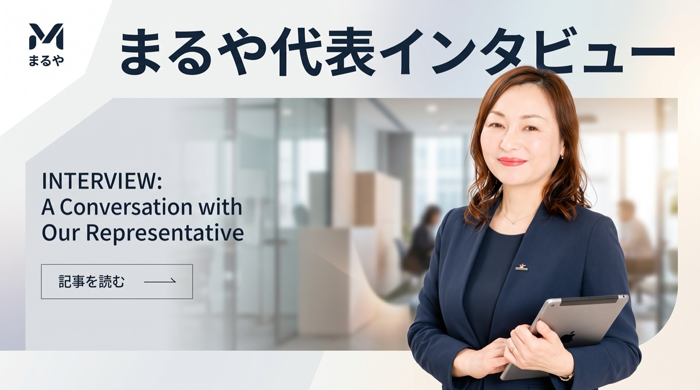

SPECIAL INTERVIEW
「大きな会社で学んだのは、
仕組みは小さく始めるということでした」
1,500名規模の組織統括や外資系管理本部長を経験してきた内田妥与が、なぜ今、京都で中小企業のバックオフィス支援に注力するのか。その原点と目指す姿を聞きました。

— まずは、これまで大規模な組織で財務や管理部門を統括されてきた内田さんが、なぜ中小企業の支援を始めようと考えられたのか教えてください。
これまで監査法人や外資系企業、IT企業のCFOとして、大きな仕組みを作る仕事を経験してきました。しかし、どんなに綺麗で高度な管理システムを作っても、現場で働く人が使いこなせなければ意味がないという場面を何度も目にしてきたんです。
特に年商1億円規模の会社では、社長ご自身が営業も現場もこなしながら、夜遅くに電卓を叩いて経理をしているような状態が珍しくありません。そうした会社に大企業のやり方をそのまま持っていっても、重すぎて回らないんですよね。
「完璧なマニュアルより、明日から10分浮く小さな工夫のほうが、社長の心を軽くします」

— 大企業の「仕組み」をそのまま当てはめるのではなく、小さく始めることが大事だと。
はい。私自身、過去には良かれと思って複雑なルールを導入しようとして失敗した苦い経験もあります（笑）。現場の方から「むずかしくて使えません」と言われてハッとしました。
そこから「続けられる仕組みしか作らない」と心に決めました。まずは13週先までの資金繰りを1枚の表で見える化する。それだけで社長の不安は格段に減ります。難しい専門用語を使わず、実務に即した『小さな仕組み』を一緒に作ることが私の役割です。
「孤独になりがちな社長が、本音で数字や悩みを話せる『右腕』でありたい」

— 初回の相談では、具体的にどのようなことから始めるのでしょうか？
特別な準備は何もいりません。「通帳と何となくの感覚しかありません」という状態で来ていただいて大丈夫です。まずは現在の状況や不安に思っていることをざっくばらんにお伺いします。
上からアドバイスをするのではなく、社長の隣に座って一緒に通帳や書類を眺めながら、「ここから整理していきましょうか」と一歩ずつ進めます。
「数字が見えると、未来の選択肢が増える。そのワクワクを一緒に味わいたいですね」

— 最後に、全国の中小企業経営者の方へメッセージをお願いします。
経営者は本当に孤独です。特に数字やバックオフィスの悩みは、社内の人にもなかなか相談しづらいものだと思います。
私たちは税理士や弁護士のような堅苦しい存在ではなく、何でも話せるパートナーでありたいと思っています。資金繰りのこと、クラウド化のこと、ちょっとした社内トラブルのこと。一人で抱え込まず、ぜひ気軽にお声がけください。